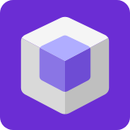

<!DOCTYPE html>
<html lang="en">
<head>
<meta charset="UTF-8" />
<title>GeniusLink — Navigation Sidebar Workbench</title>
<meta name="viewport" content="width=device-width, initial-scale=1" />
<link rel="stylesheet" href="colors_and_type.css" />
<style>
  html, body, #root { margin: 0; padding: 0; min-height: 100vh; }
  body {
    background: var(--gl-bg);
    color: var(--gl-fg-1);
    font-family: var(--gl-font-body);
  }
  ::-webkit-scrollbar { width: 8px; height: 8px; }
  ::-webkit-scrollbar-track { background: transparent; }
  ::-webkit-scrollbar-thumb { background: var(--gl-border-strong); border-radius: 4px; }
  ::-webkit-scrollbar-thumb:hover { background: #4A7CFF; }

  /* Workbench chrome — a thin label strip so it's clear this is an isolated component bench */
  .wb-bar {
    position: fixed; top: 0; left: 0; right: 0; height: 36px; z-index: 200;
    display: flex; align-items: center; gap: 10px; padding: 0 16px;
    background: var(--gl-surface); border-bottom: 1px solid var(--gl-border);
    font-family: var(--gl-font-mono); font-size: 11px; letter-spacing: 0.04em;
    color: var(--gl-fg-3);
  }
  .wb-dot { width: 7px; height: 7px; border-radius: 50%; background: #4A7CFF; }

  /* Device-size simulator controls in the workbench bar */
  .wb-spacer { flex: 1; }
  .wb-seg { display: flex; gap: 2px; background: var(--gl-input-bg); border: 1px solid var(--gl-border); border-radius: 6px; padding: 2px; }
  .wb-seg button {
    font-family: var(--gl-font-mono); font-size: 10px; letter-spacing: 0.04em;
    color: var(--gl-fg-3); background: transparent; border: none; cursor: pointer;
    padding: 4px 9px; border-radius: 4px; line-height: 1.4;
  }
  .wb-seg button[data-on="1"] { background: var(--gl-surface); color: var(--gl-fg-1); box-shadow: 0 1px 2px rgba(0,0,0,0.25); }

  @keyframes searchPop { from { opacity: 0; transform: translateY(-8px) scale(0.98); } to { opacity: 1; transform: none; } }
</style>
<template id="__bundler_thumbnail">
  <svg xmlns="http://www.w3.org/2000/svg" viewBox="0 0 100 100">
    <rect width="100" height="100" fill="#111318"/>
    <rect x="22" y="20" width="20" height="60" rx="4" fill="#1E2025" stroke="#4A7CFF" stroke-width="1.5"/>
    <rect x="27" y="28" width="3" height="10" rx="1.5" fill="#4A7CFF"/>
    <rect x="27" y="44" width="10" height="2.4" rx="1" fill="#E2E2E9"/>
    <rect x="27" y="52" width="10" height="2.4" rx="1" fill="#8D90A0"/>
  </svg>
</template>
</head>
<body data-theme="">

<div id="root"></div>

<script src="https://unpkg.com/react@18.3.1/umd/react.development.js" integrity="sha384-hD6/rw4ppMLGNu3tX5cjIb+uRZ7UkRJ6BPkLpg4hAu/6onKUg4lLsHAs9EBPT82L" crossorigin="anonymous"></script>
<script src="https://unpkg.com/react-dom@18.3.1/umd/react-dom.development.js" integrity="sha384-u6aeetuaXnQ38mYT8rp6sbXaQe3NL9t+IBXmnYxwkUI2Hw4bsp2Wvmx4yRQF1uAm" crossorigin="anonymous"></script>
<script src="https://unpkg.com/@babel/standalone@7.29.0/babel.min.js" integrity="sha384-m08KidiNqLdpJqLq95G/LEi8Qvjl/xUYll3QILypMoQ65QorJ9Lvtp2RXYGBFj1y" crossorigin="anonymous"></script>

<!-- pull in the real Icon + Logo so the bench matches production exactly -->
<script type="text/babel" src="glk-desktop-components.jsx"></script>
<!-- the sidebar under test -->
<script type="text/babel" src="navigation-sidebar.jsx"></script>

<script type="text/babel">

const { useState } = React;

// components.jsx bakes the logo path as ../../assets (correct from a 2-deep
// product folder). design_system is 1 level deep, so re-point it to ../assets.
window.Logo = function Logo({ size = 24, withWordmark = true, color }) {
  const wordColor = color || 'var(--gl-fg-1)';
  return (
    <div style={{ display: 'flex', alignItems: 'center', gap: 10 }}>
        
        {withWordmark && <span style={{ fontFamily: 'var(--gl-font-display)', fontWeight: 800, fontSize: size * 0.66, letterSpacing: '-0.01em', color: wordColor }}>GeniusLink</span>}
      </div>);

};

function FauxPage() {
  // A deliberately muted page backdrop so all attention stays on the chrome.
  const muted = { background: 'var(--gl-surface)', border: '1px solid var(--gl-border)', borderRadius: 8 };
  return (
    <div style={{ padding: '32px 40px' }}>
        <div style={{ fontFamily: 'var(--gl-font-mono)', fontSize: 11, letterSpacing: '0.12em', textTransform: 'uppercase', color: 'var(--gl-fg-4)', opacity: 0.7 }}>Finance · Accounts · Overview</div>
        <div style={{ height: 28, width: 280, maxWidth: '100%', borderRadius: 6, ...muted, marginTop: 16, opacity: 0.55 }} />
        <div style={{ display: 'grid', gridTemplateColumns: 'repeat(auto-fill, minmax(180px, 1fr))', gap: 20, marginTop: 32 }}>
          {[0, 1, 2].map((i) => <div key={i} style={{ height: 120, ...muted, opacity: 0.55 }} />)}
        </div>
        <div style={{ height: 320, marginTop: 24, ...muted, opacity: 0.55 }} />
      </div>);

}

// Device-size presets so the responsive behaviour is demoable in the bench.
const DEVICES = [
{ id: 'fill', label: 'Fill', w: null },
{ id: 'desktop', label: 'Desktop · 1280', w: 1280 },
{ id: 'tablet', label: 'Tablet · 900', w: 900 },
{ id: 'mobile', label: 'Mobile · 390', w: 390 }];


function Workbench() {
  const [screen, setScreen] = useState('accountsHub');
  const [theme, setThemeRaw] = useState('dark');
  const [device, setDevice] = useState('fill');
  const [dir, setDir] = useState('ltr');
  const [winW, setWinW] = useState(window.innerWidth);

  const setTheme = (t) => {
    setThemeRaw(t);
    document.body.dataset.theme = t === 'light' ? 'light' : '';
  };

  // In "Fill" the chrome tracks the real window; a device preset feeds it
  // that exact width so the rail/drawer breakpoints can be demoed.
  React.useEffect(() => {
    const onResize = () => setWinW(window.innerWidth);
    window.addEventListener('resize', onResize);
    return () => window.removeEventListener('resize', onResize);
  }, []);

  const dev = DEVICES.find((d) => d.id === device) || DEVICES[0];
  const vw = dev.w != null ? dev.w : winW;

  return (
    <React.Fragment>
        <div className="wb-bar">
          <span className="wb-dot" />NavigationSidebar.jsx — isolated workbench · changes here get ported into app.jsx
          <span className="wb-spacer" />
          <div className="wb-seg" style={{ marginRight: 8 }}>
            {['ltr', 'rtl'].map((d) =>
          <button key={d} data-on={dir === d ? '1' : '0'} onClick={() => setDir(d)}>{d.toUpperCase()}</button>
          )}
          </div>
          <div className="wb-seg">
            {DEVICES.map((d) =>
          <button key={d.id} data-on={device === d.id ? '1' : '0'} onClick={() => setDevice(d.id)}>{d.label}</button>
          )}
          </div>
        </div>

        <div style={{ position: 'fixed', top: 36, left: 0, right: 0, bottom: 0, display: 'flex', justifyContent: 'center', alignItems: 'stretch', background: 'var(--gl-bg)', padding: dev.w ? '20px' : 0 }}>
          <div style={{
          position: 'relative', height: '100%',
          width: dev.w ? dev.w : '100%', maxWidth: '100%',
          overflow: 'hidden', background: 'var(--gl-bg)',
          border: dev.w ? '1px solid var(--gl-border-strong)' : 'none',
          borderRadius: dev.w ? 14 : 0,
          boxShadow: dev.w ? 'var(--gl-shadow-pop)' : 'none'
        }}>
            <NavShell screen={screen} setScreen={setScreen} theme={theme} setTheme={setTheme} viewportWidth={vw} dir={dir}>
              <FauxPage />
            </NavShell>
          </div>
        </div>
      </React.Fragment>);

}

ReactDOM.createRoot(document.getElementById('root')).render(<Workbench />);
</script>
</body>
</html>
